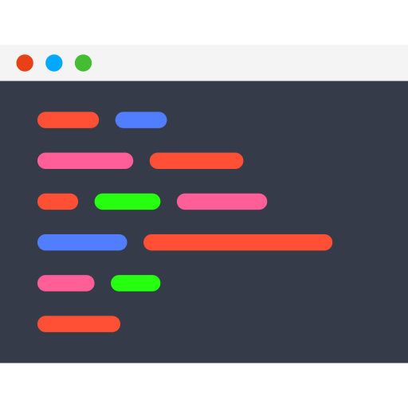

11. Harness Engineering
/
Lab 2 - Thêm Context (CLAUDE.md & docs/)
Lab 2 / 8 — thêm Context. Mỗi phiên mới agent đều "quên" quy tắc của dự án. Lab này thêm thành phần đầu tiên của harness:
Context bền vững (CLAUDE.md ngắn như bản đồ + thư mục docs/) — và để chính Claude viết các tài liệu đó
theo chỉ dẫn của bạn thay vì copy-paste.
Mục tiêu
- Dùng Claude để tạo
docs/DOMAIN.md, docs/ARCHITECTURE.md và CLAUDE.md dạng bản đồ ngắn; học cách review tài liệu do AI viết.
- Dùng Plan mode để Claude refactor code cũ về đúng kiến trúc 3 tầng (UI → service → Prisma).
- Thêm tính năng tìm kiếm bằng một prompt ngắn (không cần nhắc lại quy tắc) rồi đo bằng
scorecard.ps1; nếu điểm bất thường thì bổ sung quy tắc harness.
Mô hình kiến trúc
flowchart LR
Dev(("
 Học viên
Học viên"))
CC["
 Claude Code
Claude Code"]
subgraph Ctx["📖 Context (guides) — thành phần mới"]
CM["
CLAUDE.mdbản đồ < 60 dòng"]
AR["
docs/ARCHITECTURE.md3 tầng, quy ước"]
DM["
docs/DOMAIN.mdrole, ma trận quyền, trạng thái"]
end
subgraph Code["

src/"]
UI["src/app · src/components
UI + server action mỏng"]
SV["src/services
nghiệp vụ + phân quyền"]
DB["src/lib/prisma.ts"]
end
Dev -->|"Prompt ngắn"| CC
CM -->|"tự nạp mỗi phiên"| CC
CM -.->|"trỏ tới"| AR
CM -.->|"trỏ tới"| DM
CC -->|"đọc khi cần"| AR
CC --> UI --> SV --> DB
CLAUDE.md được Claude Code nạp tự động ở đầu mỗi phiên, nên chỉ nên là bản đồ ngắn; chi tiết nằm trong docs/ và chỉ được đọc khi cần — tiết kiệm token và dễ bảo trì.
Yêu cầu trước khi bắt đầu
- Hoàn thành Lab trước: nhánh
main chứa chức năng đăng nhập/đăng tin, có tag lab1-done.
- Container
realestate-db đang chạy; working tree sạch.
Các bước thực hành
-
Bước 1: Tạo nhánh làm việc và để Claude khảo sát code hiện có
Bắt đầu từ main. Lệnh /init làm Claude đọc codebase và sinh CLAUDE.md ban đầu:
git switch main
git switch -c lab2
claude
/init
Mở file vừa tạo và nhận xét: thường nó mô tả những gì đang có (cấu trúc thư mục, lệnh) nhưng chưa chứa luật chơi của dự án (ai được làm gì, tầng nào được gọi DB). Đó là phần chỉ bạn mới biết — và phải đưa vào.
-
Bước 2: Giao "luật chơi" cho Claude viết thành tài liệu
Trong cùng phiên, dán prompt sau. Lưu ý nó yêu cầu Claude chỉ ghi những gì bạn nêu — tài liệu do AI tự bịa quy tắc còn nguy hiểm hơn không có tài liệu.
Hãy thiết lập tài liệu cho project này để các phiên làm việc sau tuân theo cùng một quy tắc. Chỉ ghi những quy tắc tôi liệt kê, không tự bịa thêm.
Tạo 3 file:
1) docs/DOMAIN.md — nghiệp vụ:
- 4 role: BUYER đăng tin WANTED (cần mua); SELLER đăng tin SALE (bán); MODERATOR duyệt/từ chối tin; SYSTEM_ADMIN quản lý tài khoản và cấu hình hệ thống. Khách chưa đăng nhập chỉ xem tin APPROVED.
- Có bảng ma trận phân quyền (hàng = hành động, cột = Khách/BUYER/SELLER/MODERATOR/SYSTEM_ADMIN) cho: xem tin APPROVED; đăng tin WANTED; đăng tin SALE; sửa/xoá tin của chính mình; xem tin PENDING/REJECTED của người khác; duyệt/từ chối tin; khoá/mở tài khoản và đổi role; xem/sửa cấu hình hệ thống.
- Luồng trạng thái tin: tạo mới = PENDING; MODERATOR chuyển PENDING sang APPROVED hoặc REJECTED (bắt buộc có rejectReason); chủ tin sửa tin APPROVED/REJECTED thì quay về PENDING; chủ tin được xoá tin ở mọi trạng thái; không ai được tự duyệt tin của mình. Chỉ BUYER/SELLER (chủ tin) được sửa/xoá tin của mình; MODERATOR và SYSTEM_ADMIN xem được tin PENDING/REJECTED của người khác.
- Ràng buộc: tài khoản isActive=false không đăng nhập được; không được hạ role hoặc khoá SYSTEM_ADMIN cuối cùng; không được tự khoá chính mình; priceMillion và areaM2 là số nguyên dương.
2) docs/ARCHITECTURE.md — kiến trúc 3 tầng và quy ước:
- Tầng: UI (src/app, src/components) -> src/services -> src/lib/prisma.ts. Dùng chung: src/lib/authz.ts, session.ts, errors.ts, validators/.
- Quy tắc: (a) UI không import @prisma/client (cho phép import type) và không import @/lib/prisma, UI chỉ gọi hàm trong src/services. (b) Truy vấn Prisma chỉ nằm trong src/services/*-service.ts. (c) Mỗi hàm service nhận actor (SessionUser hoặc null) làm tham số đầu tiên và gọi requireRole/requireUser (src/lib/authz.ts) trước khi đọc/ghi dữ liệu không công khai. (d) Server action (src/app/**/actions.ts) chỉ: validate bằng Zod -> lấy session -> gọi service -> revalidatePath/redirect. (e) Lỗi nghiệp vụ throw AppError (src/lib/errors.ts) với mã UNAUTHENTICATED, FORBIDDEN, NOT_FOUND, VALIDATION. (f) File đặt tên kebab-case; service là -service.ts. (g) Service không import từ src/app, src/components hay next/*.
- Có 1 ví dụ đúng và 1 ví dụ sai ngắn.
3) CLAUDE.md ở thư mục gốc — viết lại thành "bản đồ" DƯỚI 60 dòng: mô tả 2 dòng về dự án; các lệnh quan trọng (docker compose up -d db, npm run dev, npm run typecheck, npm run lint, npx prisma migrate dev, npx prisma db seed); 5 quy tắc bắt buộc quan trọng nhất (tóm tắt, trỏ sang docs/); không sửa prisma/schema.prisma khi chưa được yêu cầu; không đọc hoặc in nội dung .env; Definition of Done = chạy npm run typecheck và npm run lint đều pass trước khi báo xong; liệt kê 2 file docs để đọc khi cần. Không chép lại nội dung chi tiết của docs vào CLAUDE.md.
-
Bước 3: Review tài liệu do AI viết
Thoát phiên (/exit) và đọc kỹ ba file. Đây là kỹ năng cốt lõi của người làm harness: agent soạn nháp, bạn chịu trách nhiệm nội dung.
(Get-Content CLAUDE.md).Count
notepad CLAUDE.md
notepad docs\DOMAIN.md
notepad docs\ARCHITECTURE.md
Checklist review:
CLAUDE.md dưới 60 dòng, không chép lại nội dung chi tiết của docs/.- Ma trận quyền trong
DOMAIN.md khớp đúng với những gì bạn đã nêu (không có quyền lạ).
- Các quy tắc (a)–(g) đầy đủ, ví dụ đúng/sai rõ ràng.
Nếu có chỗ sai, sửa trực tiếp hoặc mở lại claude và yêu cầu chỉnh. Sau đó kiểm tra Claude Code đã nạp file:
claude
/memory
Danh sách phải có CLAUDE.md của project. Thoát phiên rồi commit:
git add -A
git commit -m "harness: CLAUDE.md va docs (context)"
-
Bước 4: Đưa code cũ về đúng kiến trúc (Plan mode)
Code đăng nhập/đăng tin ở Lab trước được viết khi chưa có luật chơi. Dùng Plan mode để Claude đề xuất kế hoạch refactor, bạn duyệt rồi mới cho thực thi.
claude --permission-mode plan
Hãy refactor code hiện có (đăng nhập, đăng xuất, đăng tin, danh sách tin) cho khớp docs/ARCHITECTURE.md và docs/DOMAIN.md: tạo src/lib/authz.ts (requireUser, requireRole), src/lib/errors.ts (AppError), src/lib/session.ts (getSessionUser) nếu chưa có; tạo src/services/auth-service.ts và src/services/listing-service.ts chứa toàn bộ truy vấn Prisma và kiểm tra quyền; chuyển validate Zod vào src/lib/validators; làm cho server action và trang chỉ gọi service. Giữ nguyên hành vi hiện tại. Chưa viết test ở bước này. Trình bày kế hoạch trước.
Đọc kế hoạch Claude đưa ra: có tách đúng tầng không? Có đụng vào prisma/schema.prisma không (không được phép)? Nếu ổn, chọn phương án cho phép thực thi (chấp nhận sửa file). Khi xong, yêu cầu:
Chạy npm run typecheck và npm run lint rồi sửa lỗi nếu có.
Kiểm tra nhanh chức năng đăng nhập/đăng tin vẫn chạy (npm run dev, đăng nhập seller@demo.vn và đăng một tin), sau đó đo và commit:
powershell -NoProfile -ExecutionPolicy Bypass -File scorecard.ps1 -Label lab2-refactor
git add -A
git commit -m "refactor: dua code ve kien truc 3 tang"
-
Bước 5: Thêm tính năng bằng một prompt ngắn
Mở phiên mới để chắc chắn agent chỉ biết những gì harness cung cấp. Prompt chỉ nêu yêu cầu — không nhắc kiến trúc, không nhắc quy tắc, vì CLAUDE.md đã làm việc đó. Agent hiện đại đủ thông minh để hiểu một yêu cầu ngắn nếu có đúng Context.
claude --permission-mode acceptEdits
Thêm tìm kiếm và bộ lọc cho trang /listings: lọc theo thành phố/quận, loại bất động sản, khoảng giá; có phân trang.
Quan sát log: agent đọc CLAUDE.md, mở docs/ARCHITECTURE.md khi cần, đặt truy vấn trong src/services và chạy typecheck/lint trước khi báo xong. Đo và commit:
powershell -NoProfile -ExecutionPolicy Bypass -File scorecard.ps1 -Label lab2
git add -A
git commit -m "lab2: tim kiem va bo loc"
-
Bước 6: Đọc điểm số và xử lý điểm bất thường
Mở dòng mới nhất của scoreboard và đọc điểm. Dưới đây là các dấu hiệu bất thường cần xử lý:
typecheck, lint hoặc tests khác PASS (hoặc tests vẫn là NONE dù đã có hàm service mới).ui_db_imports lớn hơn 0 (UI gọi thẳng Prisma) hoặc any_usage lớn hơn 0.- Còn thư mục/trang mới đặt truy vấn ngoài
src/services (kiểm tra: Select-String -Path src\app\*\*.tsx -Pattern "prisma").
Import-Csv scoreboard.csv | Format-Table label, typecheck, lint, tests, test_files, ui_db_imports, any_usage
Nguyên tắc xử lý điểm bất thường: đừng sửa tay rồi bỏ qua. Hãy nhờ Claude (1) tìm nguyên nhân gốc và sửa lỗi, rồi (2) bổ sung đúng một quy tắc harness (một dòng trong CLAUDE.md, một mục trong docs/, hoặc một luật của sensor) để lỗi loại này không lặp lại. Nếu mọi chỉ số đều bình thường, bạn không cần làm gì thêm — không thêm quy tắc "cho chắc", vì harness thừa làm agent chậm và rối hơn.
Ví dụ cách yêu cầu (thay nội dung bằng điểm bất thường thật của bạn):
Điểm số lần chạy vừa rồi có bất thường: ui_db_imports = 2 (trang /listings import thẳng prisma). Hãy tìm nguyên nhân gốc, chuyển truy vấn về src/services theo docs/ARCHITECTURE.md, rồi đề xuất MỘT quy tắc harness (một dòng trong CLAUDE.md hoặc một ví dụ trong docs/ARCHITECTURE.md) để lỗi này không lặp lại. Chỉ thêm quy tắc, không viết lại tài liệu.
Context là "guide" — nó làm tăng xác suất agent làm đúng nhưng không bảo đảm. Nếu vẫn có điểm bất thường, bạn vừa thấy lý do cần Sensor ở Lab tiếp theo.
powershell -NoProfile -ExecutionPolicy Bypass -File scorecard.ps1 -Label lab2-fix
git add -A
git commit -m "lab2: bo sung quy tac harness sau khi phat hien diem bat thuong"
-
Bước 7: Hợp nhất vào main
Khi điểm số ổn, hợp nhất vào main và đặt tag để Lab sau bắt đầu từ đây:
git status --short
git switch main
git merge --ff-only lab2
git tag lab2-done
Xem lại toàn bộ điểm số của Lab: Import-Csv scoreboard.csv | Format-Table label, typecheck, lint, tests, test_files, ui_db_imports, any_usage.
✅ Kết quả mong đợi
Prompt ngắn ở Bước 5 cho ra code có truy vấn nằm trong src/services, dùng lại requireRole/AppError đã tạo ở bước refactor, typecheck và lint đều PASS, ui_db_imports bằng 0 hoặc gần 0. Quan trọng hơn là thói quen bạn vừa luyện: đo kết quả, và chỉ thêm quy tắc khi số liệu cho thấy có vấn đề. Context là "guide" — nếu vẫn còn vi phạm, đó chính là lý do cần Sensor ở Lab tiếp theo.
Troubleshoot
Lỗi: /init sinh CLAUDE.md rất dài (trăm dòng).
Nguyên nhân: Công cụ mô tả toàn bộ codebase.
Giải pháp: Bước 3 yêu cầu viết lại thành bản đồ dưới 60 dòng — kiểm tra bằng (Get-Content CLAUDE.md).Count. Nguyên tắc: chỉ giữ thứ agent không tự suy ra được từ code.
Lỗi: Claude tự thêm quy tắc hoặc quyền không có trong prompt vào docs/DOMAIN.md.
Nguyên nhân: Model có xu hướng "làm đầy" tài liệu.
Giải pháp: Xoá phần thừa, hoặc nhắc lại: "Chỉ giữ đúng nội dung tôi liệt kê, xoá mọi thứ bạn tự thêm."
Lỗi: Sau refactor, đăng nhập hoặc đăng tin không còn hoạt động.
Nguyên nhân: Refactor làm thay đổi hành vi (lỗi thường gặp khi chưa có test).
Giải pháp: Dán thông báo lỗi cho Claude Code và yêu cầu sửa; hoặc git reset --hard về commit trước refactor rồi chạy lại Bước 5. Đây cũng là lý do Lab sau thêm test và sensor.
Lỗi: Claude không đọc docs/ mà tự chọn cách làm riêng.
Nguyên nhân: CLAUDE.md chưa trỏ rõ tới tài liệu hoặc quy tắc quá chung chung.
Giải pháp: Đo bằng scorecard, rồi theo Bước 6: yêu cầu Claude bổ sung đúng một dòng/ví dụ cụ thể vào CLAUDE.md hoặc docs/ARCHITECTURE.md.
Dọn dẹp resource
Không có resource Cloud. Giữ nhánh lab2 và tag lab2-done để đối chiếu ở Lab cuối.